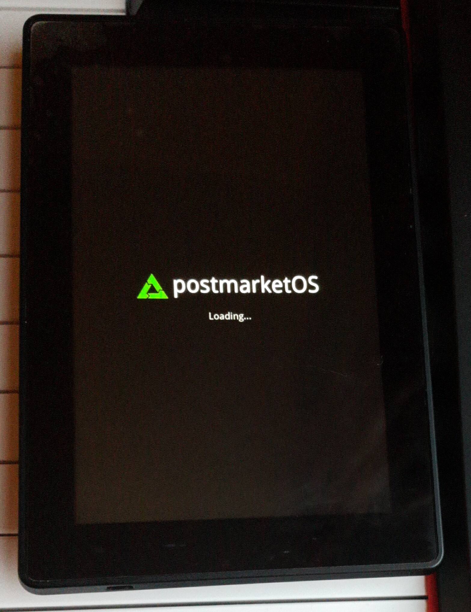

Amazon Kindle Fire HD 3rd Generation (amazon-soho)
|
 Kindle Fire HD 3rd Generation | |
| Manufacturer | Amazon |
|---|---|
| Name | Kindle Fire HD 3rd Generation |
| Codename | amazon-soho |
| Released | 2013 |
| Category | testing |
| Original software | Fire OS 4 (= Android 4.4) |
| postmarketOS kernel | 3.4.113 |
| Hardware | |
| Chipset | TI OMAP 4470 |
| CPU | Dual-core 1.5 GHz Cortex-A9 |
| GPU | PowerVR SGX544 |
| Display | 800x1280 |
| Storage | 8/16 GB |
| Memory | 1 GB |
| Architecture | armv7 |
{kind=link}
| USB Networking |
Works
|
|---|---|
| Flashing |
Partial
|
| Touchscreen |
Works
|
| Display |
Partial
|
| WiFi |
Works
|
| FDE | |
| Mainline | |
| Battery | |
| 3D Acceleration | |
| Audio | |
| Bluetooth | |
| Camera |
Unavailable
|
| GPS |
Unavailable
|
| Mobile data |
Unavailable
|
| SMS |
Unavailable
|
| Calls |
Unavailable
|
| USB OTG | |
| NFC | |
| Accelerometer | |
|---|---|
| Magnetometer | |
| Ambient Light | |
| Proximity | |
| Hall Effect | |
| Barometer | |
| Power Sensor | |
| Camera Flash | |
|---|---|
| Keyboard | |
| Touchpad | |
| USB-A | |
| HDMI/DP | |
| Ir TX | |
| Ir RX | |
| Stylus | |
| Haptics | |
| Ethernet | |
| FOSS bootloader | |
Contributors
Maintainer(s)
Users owning this device
Downstream kernel
Please note the downstream kernel is currently NOT SELinux enforcing. It is built using gcc4. This kernel can be installed easily using the installation guide now that the initial merge request has been merged, though please do note the quirks in the Installation section below.
Mainline kernel
Though no effort has been made to mainline this device yet, there is good support for OMAP4 in mainline. Efforts have been made to mainline the 8.9 inch Kindle Fire HD (jem), which uses the same SoC and many of the same components, so much of the code will work for soho.
How to flash firmware
You can flash firmware two different ways: fastboot or recovery.
To flash pmOS, you need a recovery such as TWRP or use fastboot. To get into fastboot mode, a fastboot/factory cable is required. Connect the cable to the (powered off) device first, and then connect it to your computer. The device will then boot into fastboot mode. An alternative method is also available. If your device has root, you can boot into TWRP by following instructions on XDA (just search "kindle fire soho twrp" on Google).
To boot into TWRP once installed, press the volume down button and the power button at the same time, releasing the power button when the 'Kindle Fire' logo appears, and only releasing the volume down button when the white Amazon logo appears.
Installation
For flashing, pmbootstrap flasher flash_rootfs works, but for some reason pmbootstrap flasher flash_kernel does not. However, pmbootstrap export allows you to fastboot flash boot /path/to/boot.img-amazon-soho, which works fine (though some versions of fastboot require flash:raw instead of flash)
Sideloading a recovery zip in TWRP also should work.
Partitions
Output of sudo parted /dev/mmcblk0 print:
Model: MMC SEM08G (sd/mmc) Disk /dev/mmcblk0: 7818MB Sector size (logical/physical): 512B/512B Partition Table: gpt Disk Flags:
| Number | Start | End | Size | File system | Name | Flags |
|---|---|---|---|---|---|---|
| 1 | 131kB | 262kB | 131kB | xloader | msftdata | |
| 2 | 262kB | 524kB | 262kB | bootloader | msftdata | |
| 3 | 524kB | 590kB | 65.5kB | idme | msftdata | |
| 4 | 590kB | 606kB | 16.4kB | crypto | msftdata | |
| 5 | 606kB | 608kB | 2048B | misc | msftdata | |
| 6 | 1049kB | 17.8MB | 16.8MB | ext4 | efs | msftdata |
| 7 | 17.8MB | 26.2MB | 8389kB | recovery | msftdata | |
| 8 | 26.2MB | 32.7MB | 6519kB | boot | msftdata | |
| 9 | 32.7MB | 41.1MB | 8397kB | exploit | msftdata | |
| 10 | 41.2MB | 1343MB | 1302MB | system | msftdata | |
| 11 | 1343MB | 2287MB | 944MB | ext4 | cache | msftdata |
| 12 | 2287MB | 7818MB | 5531MB | ext4 | userdata | msftdata |
See also
- TWRP installation files and instructions
- pmaports!2056 Initial merge request
- Device package
- Kernel package